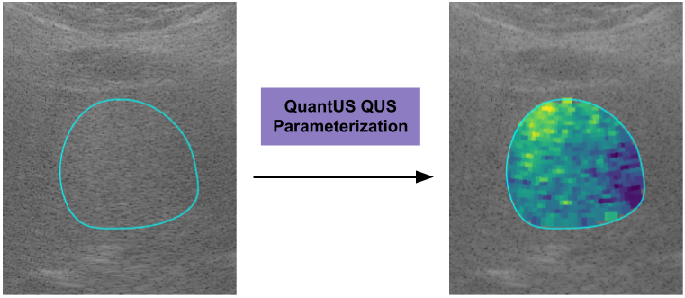
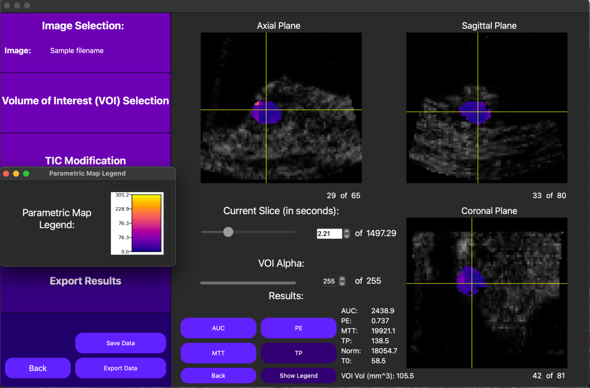

Overview
QuantUS is an open-source quantitative analysis tool designed for ultrasonic tissue characterization and contrast enhanced imaging analysis. This software provides an ultrasound system-independent platform for standardized, interactive, and scalable quantitative ultrasound research. QuantUS follows a two-tier architecture that separates core functionality in the [backend](https://github.com/TUL-Dev/PyQuantUS) from user interaction support in the frontend. The software is compatible on Mac OS X, Windows, and Linux.
The primary features of QuantUS include:
2D Ultrasound Tissue Characterization (UTC) via spectral analysis of RF and IQ data
2D Dynamic Contrast-Enhanced Ultrasound (DCE-US) Perfusion Imaging Analysis with optional Motion Compensation
3D DCE-US Perfusion Imaging Analysis
Notably, QuantUS addresses shortcomings in existing state-of-the-art tools by supporting 3D parametric map generation, motion compensation for 2D DCE-US analysis, an ultrasound system-independent approach, and by providing a standardized and reproducible platform for quantitative ultrasound research.
UTC Overview
Given user-inputted RF or IQ ultrasound data, this feature runs spectral analysis to compute quantitative ultrasound parameters and parametric maps on a custom region of interest (ROI). In QuantUS, the midband fit (MBF), spectral slope (SS), and spectral intercept (SI) spectral parameters as described by El Kaffas et al. have been validated and used in numerous ultrasound studies. Additionally, the backscatter coefficient, attenuation coefficient, Nakagami parameter, effective scatterer size, and effecive scatterer concentration have all been implemented into the UI and are in the validation process.
The UTC feature of QuantUS also supports a CLI for Terason and Canon transducers. More information and an example can be found in the Jupyter notebooks scCanonUtc.ipynb and terasonUtc.ipynb within our codebase.
{kind=link}
DCE-US Overview
For both 2D and 3D cine loops, QuantUS performs quantitative analysis on bolus contrast injections by computing a time intensity curve (TIC) for a given ROI or volume of interest (VOI). 2D cine loops can optionally run a 2D motion compensation algorithm developed by Tiyarattanachai et al. before the TIC is computed to reduce motion-induced noise.
From here, a lognormal curve is fitted, returning the area under the curve (AUC), peak enhancement (PE), mean transit time (MTT), time to peak (TP), normalization (TMPPV), and region area/volume values. For processors with high computational power, a parametric map of each parameter can be generated in both 2D and 3D as well.
{kind=link}